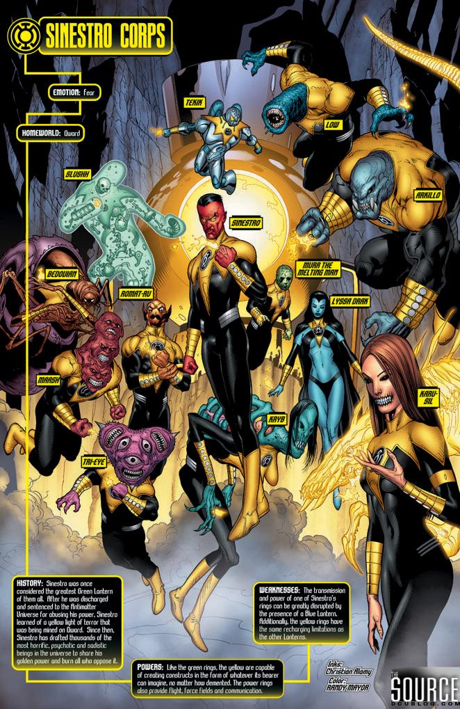

The emotional enity for the Sinestro corp is called the paralax he was the emotioal enity of fear also known as the yellow impurity thh weakness to all Green lanterns was locked in the green lantern central power battery. Sinestro one of the greatest green lanterns betrayed them. As punshiment he was banished by the gaurdians of the universe to the another universe. When he returned he had a yellow ring powered by the same yellow energy that had weakend the green lanterns he came for revenge against them but was utlitmaltly defeated. He was imprionsed within the green lantern central battery. There he was able to use the emotion of fear to break paralax out of it's prison. After he broke out again he used paralax influcenc to kill every green lantern except Kyle Rayner. Sinestro started building the sinestro corp by makeing rings to go to that install great fear then they were taken to Qward and subject to psychological and physical reconditioning with enough people chosen by the ring he finally started the sinestro corp to take down the newly reformed green lanter corps. There lantern oath is "In blackest day, in brightest night, Beware your fears made into light. Let those who try to stop what's right Burn like my power Sinestro's might!
 Here is a orange lantern page. Here is a Red lantern page. Here is a green lantern page. Here is a indigo lantern page. Here is a Blue lantern page. Here is a sinestro corp page. Here is a sinestro corp page.